陽光、風力、地熱，
在一座展館裡相遇
台泥綠能願景館
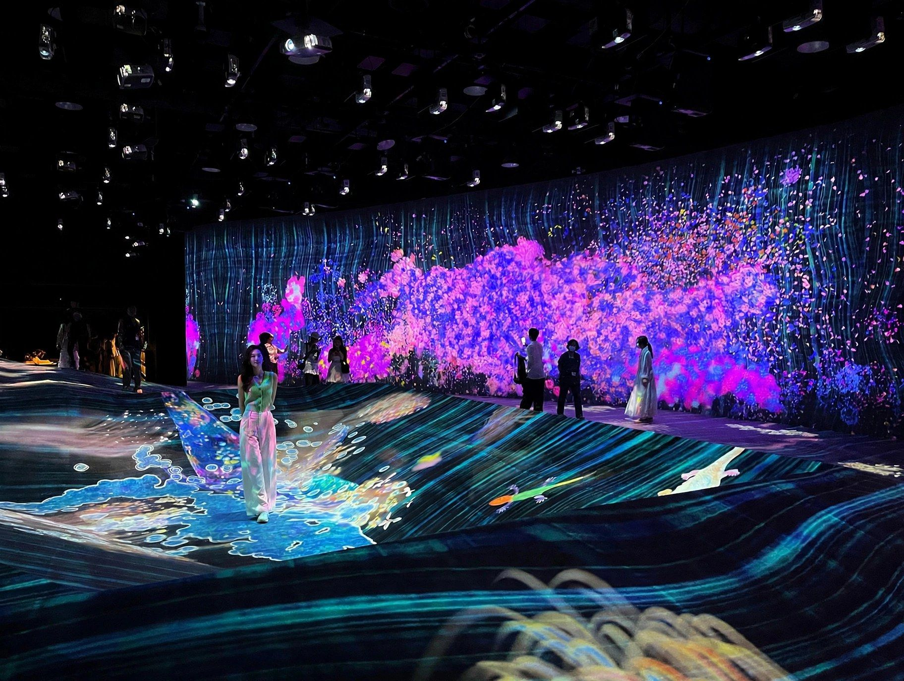
不只是展覽–
你就是藝術的一部分！
走進呼吸中的光影魔幻宇宙
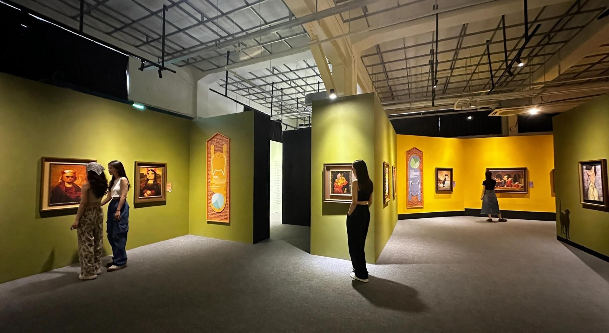
貓美術館
山本修的超療癒世界
作品典藏
讓空間蛻變為體驗的作品。
精選麗荃室內裝修在各地完成的展覽、室內、視覺設計案例。
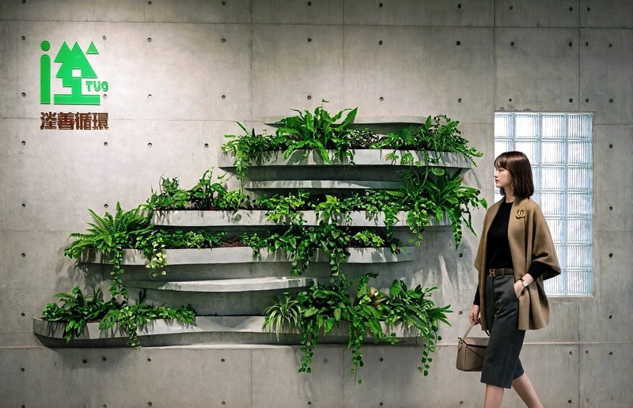
陽光、風力、地熱，
在一座展館裡相遇
台泥綠能願景館

不只是展覽–
你就是藝術的一部分！
走進呼吸中的光影魔幻宇宙

貓美術館
山本修的超療癒世界
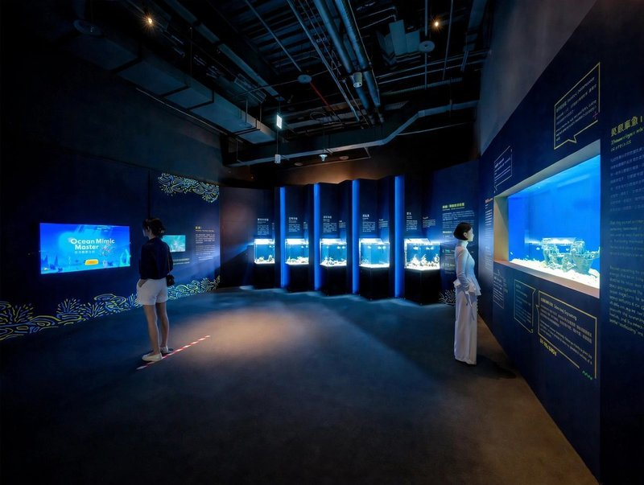
眼見為憑？
海洋幻術師：擬態與偽裝

消失的科學家，
藏在限制裡的設計
電磁視界2.0

永恆聖母院
VR沉浸式體驗展臺灣首度亮相
名偵探柯南連載20周年紀念展
連載20周年紀念
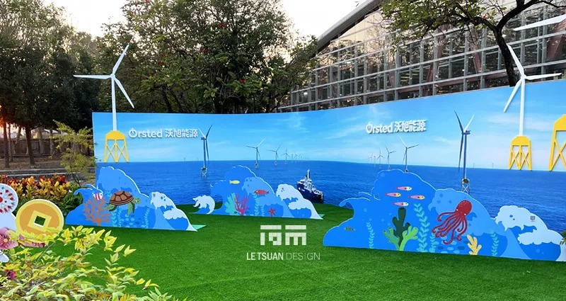
灰階中的亮點
從畸零基地到打卡地標–2023彰化花卉博覽會 Ørsted 展區

ゲゲゲの鬼太郎
妖怪100物語

離岸風電運維中心
學習中心裝修改造

與風共榮
2022臺灣國際能源展-沃旭能源

開展那天，
93件化石一件都不能遲到
熱河生物群特展

證券公司辦公室
現代辦公空間

綠能教育觀景平台
彰化濱海工業區
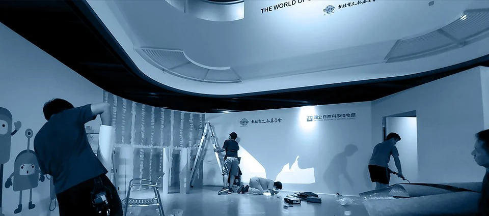
半導體的世界
臺灣積體電路 × 國立自然科學博物館

返校
實境體驗展

五千年的沉默
古代人說故事
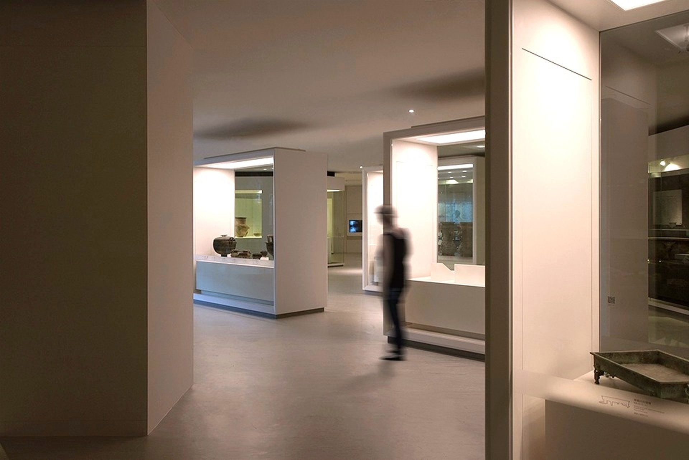
館藏精選文物展
館藏展

名偵探柯南科學搜查展
科學搜查展 – 科教館-臺北、科工館-高雄
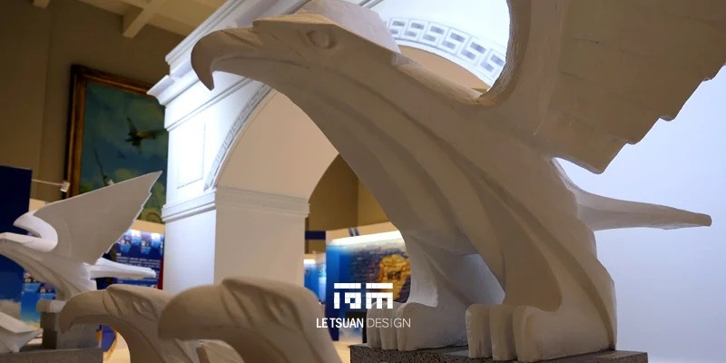
九十年的天空，
值得被好好述說
光之長廊：空軍軍官學校史特展
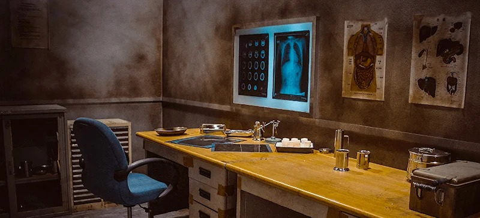
東京恐怖病院
跨時空敘事場景重現，完成一場黑暗中的沉浸式體驗
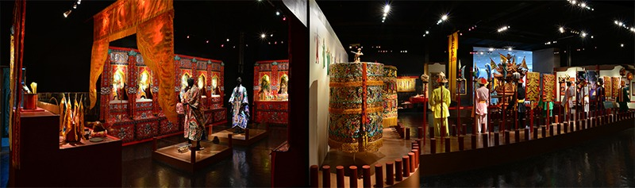
代天巡狩
東港迎王特展

美麗與吉祥
國立歷史博物館館藏刺繡展
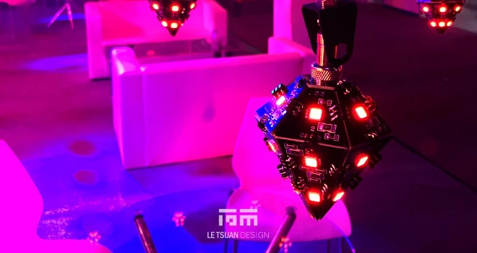
宇宙
500件LED動態燈光裝置
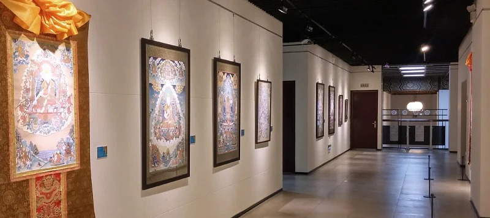
移動寺廟
青海熱貢唐卡展
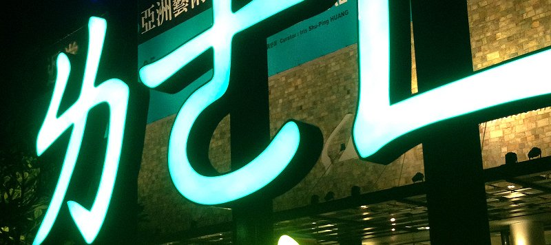
草皮比作品更需要被保護
2013亞洲藝術雙年展
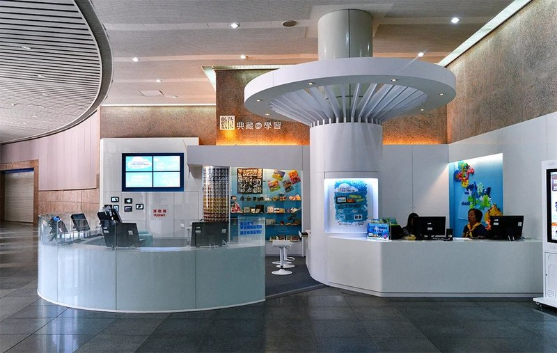
科博館數位典藏
數位典藏展
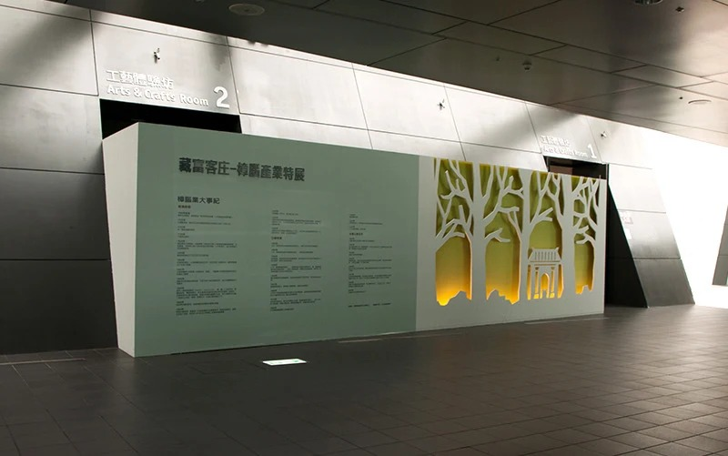
藏富客庄
樟腦產業特展

原鄉驚艷
陳正雄臺灣原住民文物收藏展
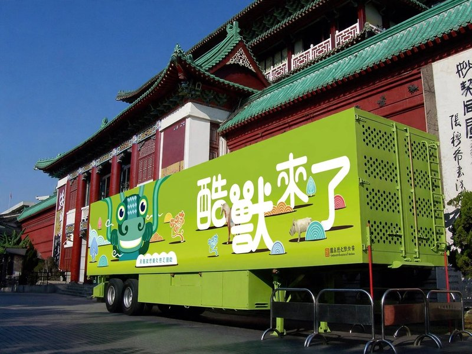
8.5坪的博物館
酷獸來了行動博物館

Just Only
環保型錄
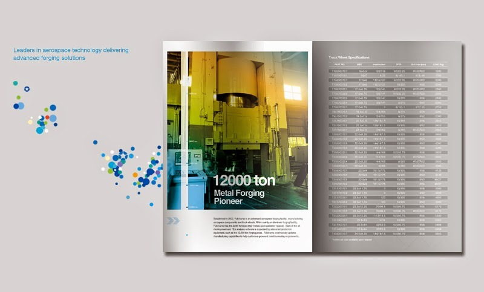
Fullchamp
型錄設計
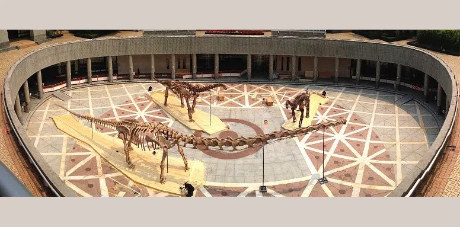
從龍到獸
大滅絕與大演化特展

防災教育館
921地震教育園區

看見文化部
一段歷史，無數個日常
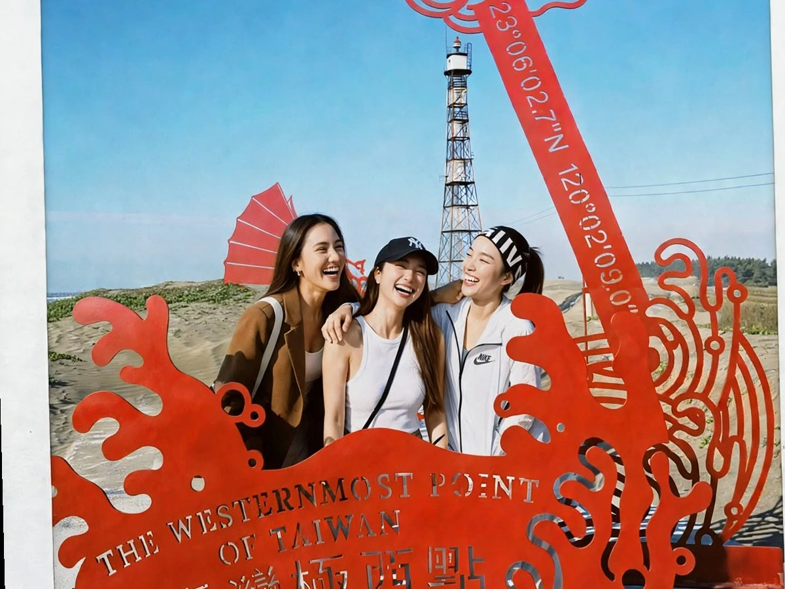
臺灣極西點
北緯23°06'02.7"，東經120°02'09.0"
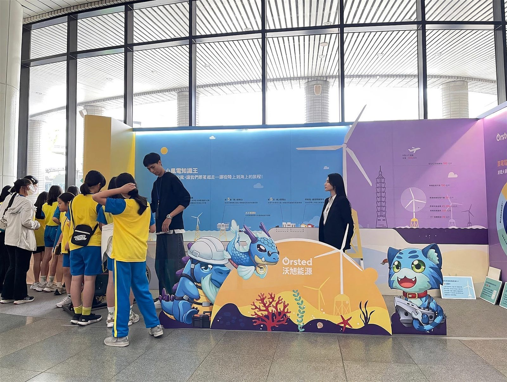
風動台灣
沃旭永續風潮展－2024第四屆台灣氣候行動博覽會